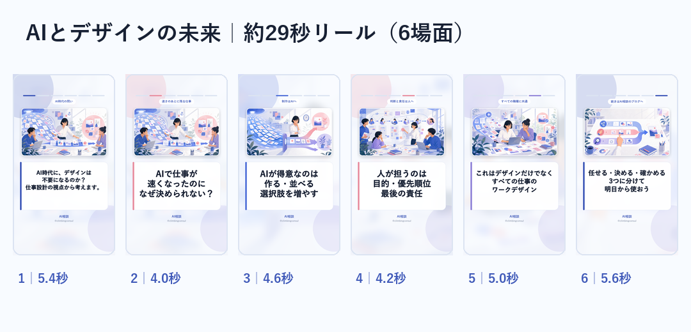

AIとデザインの未来｜リール確認
投稿先 @climbingconsul／状態: 最終承認待ち・未投稿

ストーリー見本
キャプション
AIで資料もサイトもアプリも、驚くほど早く形になる。
でも、最後の「どれを選ぶか」で仕事が止まることがあります。
私自身、以前なら1か月単位で考えていた作業が2時間ほどで初稿まで進んでも、方向を決めるのに2日、3日かかることがあります。
AIが弱いからではありません。
作る時間が短くなったぶん、目的・優先順位・責任が濃く残るからです。
これはデザイナーだけの話ではなく、経営者、プロジェクトリーダー、先生、福祉の現場、個人事業主にも共通する「ワークデザイン」の話です。
まず一つの仕事を、
・AIに任せる
・人が決める
・結果を確かめる
の3つに分けてみてください。
詳しい考え方と15分で作れるメモは、AI相談のブログにまとめました。
https://ai-hub-jp.vercel.app/blog/2026-08-06-ai-work-design-future.html
#AI活用 #ワークデザイン #仕事術 #DX #デザイン #プロジェクト管理 #AI相談
ストーリー
作業は速い。でも、決める仕事は残る。
AI時代の『ワークデザイン』を約29秒で整理しました。
詳細はこちら
https://ai-hub-jp.vercel.app/blog/2026-08-06-ai-work-design-future.html
ブランドコメント
AIに全部任せるより、『任せる・決める・確かめる』を分けると現場で続きます。自分の仕事ならどう分けるか、気軽にDMしてください。